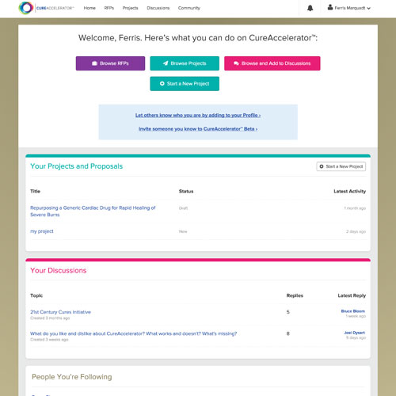
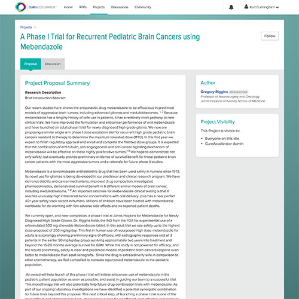
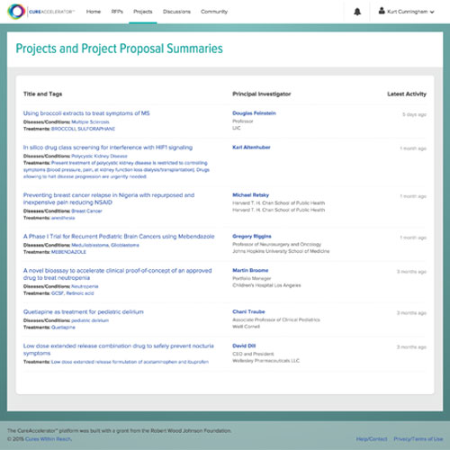
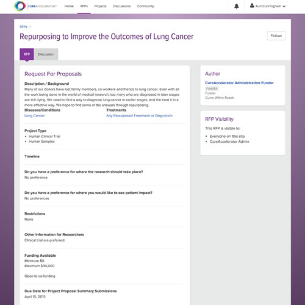
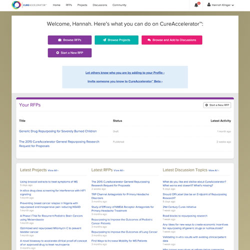
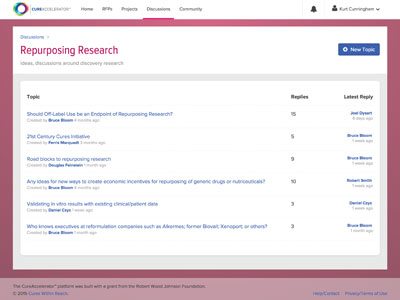

Repurposing
Speed Treatments to patients
Researchers, funders, clinicians and others harnessing the power of repurposing research
More than 7,000 diseases have no fully effective treatment, affecting more than 500 million people worldwide. Thousands of existing drugs and devices have the potential to be repurposed to treat patients waiting for a cure. The CureAccelerator community has the ability to make that happen. Get started, or learn more about repurposing.
The CureAccelerator platform was built with a grant from the Robert Wood Johnson Foundation
What is CureAccelerator?
World’s First Online, Interactive Platform For Repurposing Research
CureAccelerator supports “proof of concept” research repurposing drugs, devices and nutriceuticals already approved for human use. On CureAccelerator, funders have direct access to repurposing research, researchers can post ideas and connect with peers and funding, and clinicians can contribute their experience of off-label use in need of validation. Using expertise, resources and dollars on hand, CureAccelerator is here so that we can all quickly and affordably answer the question “will this help patients?”
- 
- 

- 
- 
- 
CureAccelerator Community


Featured Content
CureAccelerator Featured Users And Projects
CureAccelerator has been created by Cures Within Reach, the leading organization dedicated to repurposing research, testing existing drugs, devices and nutriceuticals for new therapeutic uses. Since 1998, Cures has funded medical repurposing research, working to improve clinical care.
Request for Proposal
TRP Channel Antagonists for Primary Headache Disorders
- Human Clinical Trial
- Cluster Headache Support Group
Research project
Quetiapine as treatment for pediatric delirium
- Chani Traube, MD
- Weill Cornell Medical College
Current Discussion topics
Discussion taking place on CureAccelerator right now
- Should Off-Label Use be an Endpoint of Repurposing Research?